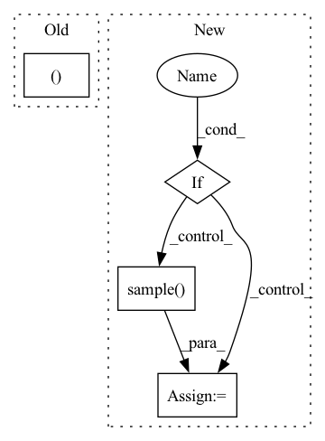

Pattern ID :35496

Before Change
deterministic: bool = False) -> ActionType:
implementation of :class:`~maze.core.agent.policy.Policy`
action, _ = self.compute_action_with_logits(observation, actor_id, deterministic)
return action
@override(Policy)
After Change
with torch.no_grad():
policy_out = self.compute_substep_policy_output(observation, actor_id)
if deterministic:
action = policy_out.prob_dist.deterministic_sample()
else:
action = policy_out.prob_dist.sample()
return convert_to_numpy(action, cast=None, in_place=False)
@override(Policy)
def compute_top_action_candidates(self,
In pattern: SUPERPATTERN
Frequency: 3
Non-data size: 4
Instances
Fragment ID: 101388890
Project Name: enlite-ai/maze
Commit Name: 53f2ea0b5fb4905306f4410f61af75372256fbcc
Time: 2021-06-24
Author: office@enlite.ai
File Name: maze/core/agent/torch_policy.py
M Class Name: TorchPolicy
N Class Name: TorchPolicy
M Method Name: compute_action(6)
N Method Name: compute_action(6)
M Parent Class: TorchModel,Policy
N Parent Class: TorchModel,Policy
M File Name: maze/core/agent/torch_policy.py
N File Name: maze/core/agent/torch_policy.py
M Start Line: 197
M End Line: 198
N Start Line: 179
N End Line: 185
'>
Before Change
log_std = self.std_clamp(log_std)
return mean, log_std
if __name__ == "__main__":
use_cuda = torch.cuda.is_available()
After Change
mean, log_std = torch.split(x, x.shape[1] // 2, dim=1)
if deterministic:
action = mean
std = torch.zeros_like(log_std)
else:
// todo: is clamp really necessary?
log_std = self.std_clamp(log_std)
std = log_std.exp()
m = MultivariateNormal(mean.reshape(-1), torch.diag(std.reshape(-1)))
action = m.sample()
action = action.reshape(mean.shape)
action = action.tanh()
'>
Fragment ID: 101388879
Project Name: tmdt-buw/karolos
Commit Name: 39ca64b6106c80c48f0605a15cde575769fad233
Time: 2020-04-23
Author: scheiderer@uni-wuppertal.de
File Name: agents/nnfactory/sac.py
M Class Name: Policy
N Class Name: Policy
M Method Name: forward(3)
N Method Name: forward(2)
M Parent Class: nn.Module
N Parent Class: nn.Module
M File Name: agents/nnfactory/sac.py
N File Name: agents/nnfactory/sac.py
M Start Line: 100
M End Line: 102
N Start Line: 95
N End Line: 115
'>
Before Change
npsamples = self._buffer.sample(batch_size)
samples = self.samples_from_cpprb(npsamples)
weights = torch.ones(batch_size, device=self.device)
return (*samples, weights)
def update_priorities(self, indexes, td_errors):
"""Update priorities based on the TD error"""
After Change
def sample(self, batch_size):
"""Sample from the stored transitions"""
if self._prioritized:
npsamples = self._buffer.sample(batch_size, beta=self._beta)
else:
npsamples = self._buffer.sample(batch_size)
samples = self.samples_from_cpprb(npsamples)
return samples
'>
Fragment ID: 101388883
Project Name: syuntoku14/pytorch-rl-il
Commit Name: e04bcf297330858ceb59b30c7aab0cbbed4f30e4
Time: 2020-05-26
Author: syuntoku14@gmail.com
File Name: rlil/memory/replay_buffer.py
M Class Name: ExperienceReplayBuffer
N Class Name: ExperienceReplayBuffer
M Method Name: sample(2)
N Method Name: sample(2)
M Parent Class: BaseReplayBuffer
N Parent Class: BaseReplayBuffer
M File Name: rlil/memory/replay_buffer.py
N File Name: rlil/memory/replay_buffer.py
M Start Line: 83
M End Line: 86
N Start Line: 119
N End Line: 124